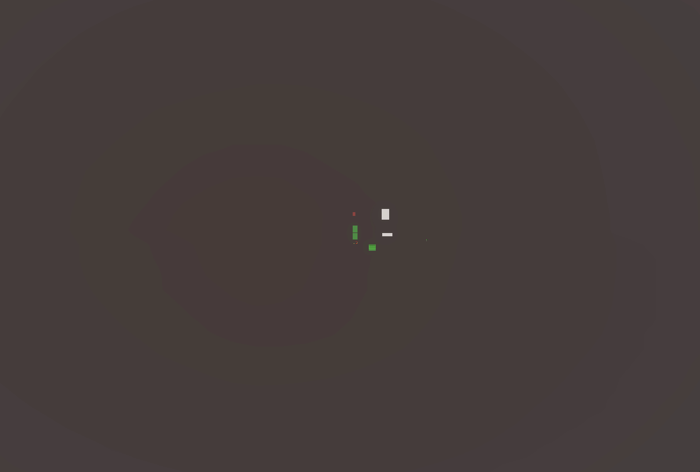
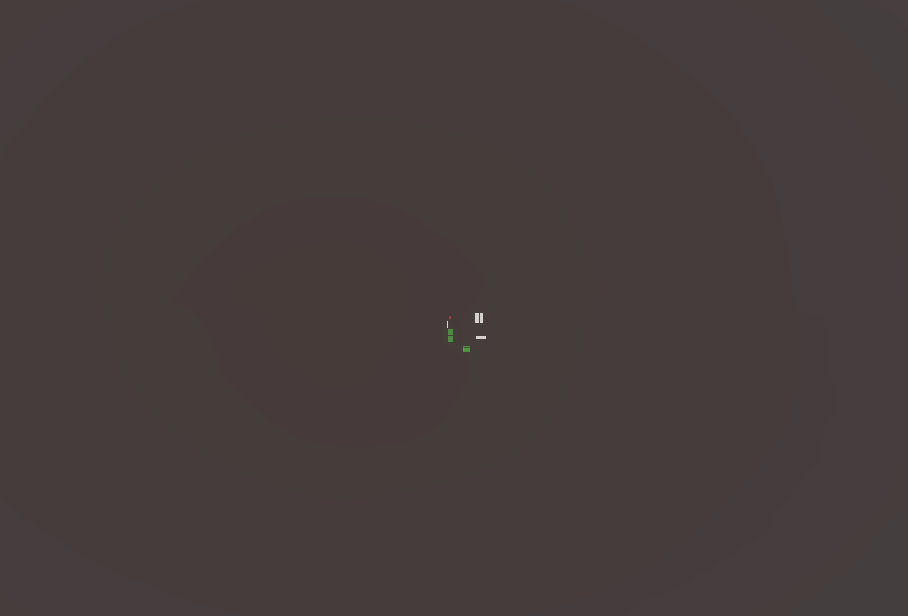
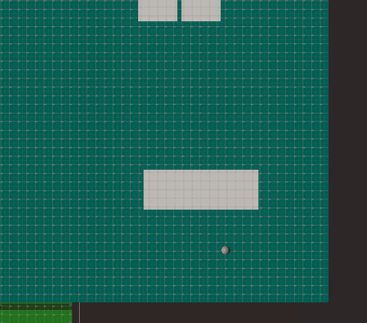

Beneath the Surface
Multiplayer dungeon-crawler horror prototype

The Premise
Beneath the Surface is a four-player cooperative horror rougelike set in a dark medieval world where kingdoms send explorers into ever‑deepening, ever‑shifting dungeon systems. Inspired by Lethal Company, Pilgrim, and Phasmophobia, it blends procedural generation, team‑based survival, and high‑tension encounters.
Each expedition begins at the mouth of a procedural dungeon. A creaking elevator drops you one floor at a time—no maps, no guarantees, and no second chances if your team wipes.
Core Gameplay
Cooperative Medieval Survival
- Communicate threats and share resources
- Split tasks or stick together under pressure
- Decide when to push deeper or retreat to safety
Procedural Dungeon Exploration
- Floors assembled from handcrafted modules with dynamic connectors
- Collision checks prevent overlaps; layouts are unique every run
- Threat and complexity escalate with depth
Multiplayer-Focused Systems
- Unity Netcode for GameObjects + Unity Relay
- Synced room generation across clients
- Networked object interaction (pickups, drops, physics)
Depth as the Main Mechanic
- Going deeper increases risk, rarity, threat, and payout
- Elevator acts as safe zone, checkpoint, and only exit
Visual & Atmospheric Style
- Unity HDRP: dark shadows, volumetric lighting, dense fog
- Torch-lit corridors, dripping stone chambers, medieval gear
- Audio occlusion and moody ambiences drive tension
Technical Challenges & Solutions
Procedural Dungeon Generation
I built a custom dungeon generation solution from scratch. The system works by defining an initial room to start from, then moving outwards in branches. Each dungeon 'piece' has the room geometry attached, a doorway connector object for each entrance to the room, and a tag determining what class of room the piece is.
When placing a new piece, the generator picks a random available connector from the current dungeon layout, then selects a random piece from the pool that has a valid connector tag. It aligns the new piece's connector to the selected connector, then checks for collisions with existing geometry. If a collision is detected, it tries again with a different piece or connector until it finds a fit or exhausts options. Upon successfully placing a new piece, it moves forward to the new piece's doorway connector, and repeats the placing process. This process repeats, expanding the dungeon outwards until it hits a size target or it cannot place any new pieces.
This is my system at work successfully generating a dungeon:

However, dungeons don't always generate successfully:

In this edge case, the generator has run out of valid placements due to collisions. To handle this, the generator picks a new seed and runs the algorithm again.
Problems I encountered:
- Dungeon piece misalignment: different clients sometimes saw different layouts → sync physics state with
Physics.SyncTransforms()after generation. - Object pickup & ownership: only host could move objects → refined authority and networked transform logic.
- Overlapping pieces in new projects: false collisions after updating to a new Unity version → enabled Auto Sync Transforms, a new feature breaking my code.
Custom Audio Solution
I also designed a custom audio system for this game. One of it's main features is the dynamic audio occlusion system.
The player is contantly checking for any audio sources in their hearing range. When an audio source is found, the player sends a series of raycasts in the Audio Source's direction to check for any collision. If no collisions are detected, audio can be heard clearly and without any muffle. However, if a ray does hit an object between the player and the audio source, a slight muffle effect is applied to the audio source. This effect is magnified based on the number of rayasts that hit an object, and the player's distance from the audio source. This creates a realistic muffling effect as players move around corners and through the dungeon, enhancing immersion and tension.
Here is the audio occlusion system in action:

As the player moves behind the wall, the rays turn red as they begin to detect collisions. This causes the audio to gradually and realistically become muffled based on world geometry. When the player steps back into view of the audio source, the rays clear up again, alongside the muffle effect.
Why This Game Exists
Built to explore cooperative tension, world based storytelling, and medieval horror, while also becoming a really good IB Computer Science IA. It demonstrates networking, complex algorithms, procedural generation, physics, and asset creation.
Future Development
- Enemy AI and ambush behavior
- Expanded loot, upgrades, and more room modules
- Traps, secrets, kingdom contracts
- Proximity based voice chat systems
- A refined progression loop based on risk and depth
This game is still under development. All images, descriptions, and assets are subject to change.
Back to Projects